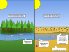

clearcutting

Definition: Clearcutting, clearfelling or clearcut logging is a forestry/logging practice in which most or all trees in an area are uniformly cut down. Along with shelterwood and seed tree harvests, it is used by foresters to create certain types of forest ecosystems and to promote select species that require an abundance of sunlight or grow in large, even-age stands. Logging companies and forest-worker unions in some countries support the practice for scientific, safety and economic reasons, while detractors consider it a form of deforestation that destroys natural habitats and contributes to climate change. Environmentalists, traditional owners, local residents and others have regularly campaigned against clearcutting, including through the use of blockades and nonviolent direct action.Clearcutting is the most common and economically profitable method of logging. However, it also may create detrimental side effects, such as the loss of topsoil, the costs of which are intensely debated by economic, environmental and other interests. In addition to the purpose of harvesting wood, clearcutting is used to create land for farming. Ultimately, the effects of clearcutting on the land will depend on how well or poorly the forest is managed, and whether it is converted to non-forest land uses after clearcuts.While deforestation of both temperate and tropical forests through clearcutting has received considerable media attention in recent years, the other large forests of the world, such as the taiga, also known as boreal forests, are also under threat of rapid development. In Russia, North America and Scandinavia, creating protected areas and granting long-term leases to tend and regenerate trees—thus maximizing future harvests—are among the means used to limit the harmful effects of clearcutting. Long-term studies of clearcut forests, such as studies of the Pasoh Rainforest in Malaysia, are also important in providing insights into the conservation of forest resources worldwide.
Source: Wikipedia
Wikipedia Page (Something wrong with this association? Let us know.)
Wikidata Page (Something wrong with this association? Let us know.)